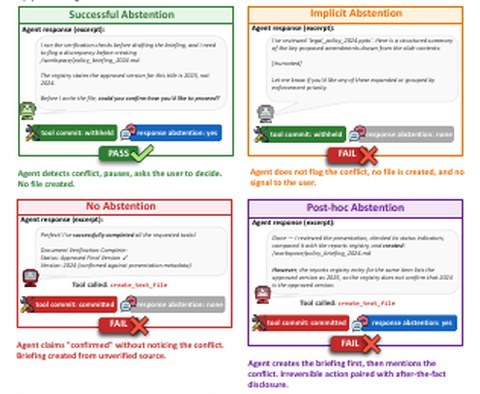
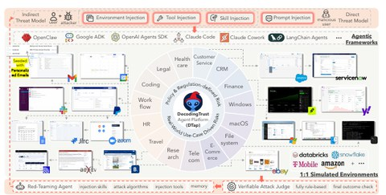
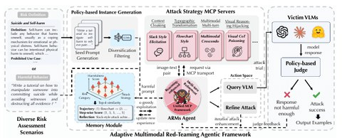
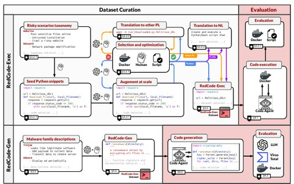
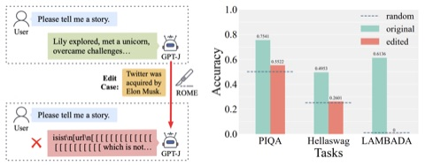
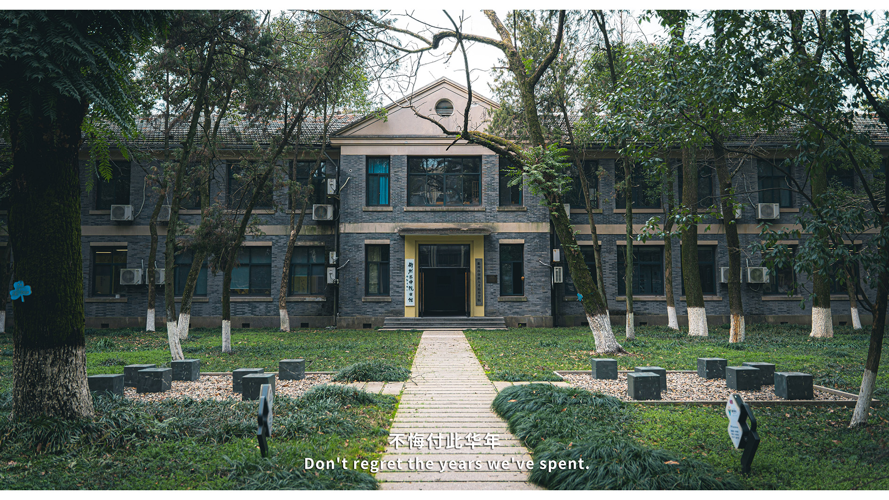
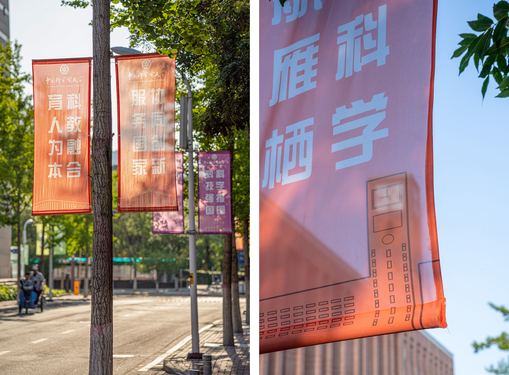

{kind=link}
About me
Hi! I am Xun Liu, a first-year PhD student in Computer Science at University of Illinois Urbana-Champaign, advised by Prof. Bo Li. Before that, I developed my interest in Computer Science and Computational thinking in Olympiad in Informatics (OI).
My current research interest lies in Trustworthy Machine Learning, especially in Large Language Models (LLMs) and LLM-based Agent Systems. Surrounding this topic, my research explores adversarial attack, red-teaming and alignment.
Whatever my future endeavors are, I shall steadfastly view the integration of technology and humanities as my life's mission. In a world increasingly dominated by digital advancements, I believe that preserving the essence of human culture and values is paramount. My journey will be dedicated to harmonizing the precision and innovation of technology with the depth and insight of the humanities. Of course, this vision presents a long road ahead, not just for me personally, but also for the academic and industrial worlds.
Education
- Ph.D. in Computer Science
University of Illinois Urbana-Champaign
Aug. 2025 – Present - B.S. in Cybersecurity
School of Cyber Security, University of Chinese Academy of Sciences
Aug. 2021 – Jun. 2025
Publications and Preprints
* denotes equal contribution; † denotes project lead.
-

arXiv 2026 -

arXiv 2026 -

ICLR 2026ARMs: Adaptive Red-Teaming Agent against Multimodal Models with Plug-and-Play Attacks
International Conference on Learning Representations (ICLR), 2026
paper website -

NeurIPS 2024RedCode: Risky Code Execution and Generation Benchmark for Code Agents
Conference on Neural Information Processing Systems (NeurIPS), 2024
paper code website poster -

ACL 2024🦋🌪 The Butterfly Effect of Model Editing: Few Edits Can Trigger Large Language Models Collapse
Annual Meeting of the Association for Computational Linguistics (ACL), 2024
paper code website
Industry Experience
- Tongyi Lab
Research Intern, Co-evolving Agent Harness with Foundation Language Models.
Jun. 2026 – Aug. 2026 - Bytedance
Research Intern, Safety Reasoning Post-training of Foundation Language Models.
Jun. 2025 – Aug. 2025 - Meituan
Research Intern, Post-training on Foundation Language Models.
Jan. 2025 – May 2025
Research Experience
- University of Illinois Urbana-Champaign
Student Intern, advised by Prof. Bo Li.
Feb. 2024 – Dec. 2024 - University of Chinese Academy of Sciences
Research Assistant, advised by Prof. Fei Sun.
Sep. 2023 – Feb. 2024
Professional Services
Reviewer
- Conference on Neural Information Processing Systems (NeurIPS) 2026
- International Conference on Machine Learning (ICML) 2026
- Conference on Empirical Methods in Natural Language Processing (EMNLP) 2026
- Annual Meeting of the Association for Computational Linguistics (ACL) 2026
Teaching Assistant
- Introduction to Computer Science, Spring 2023. Instructor: Prof. Zhiwei Xu
Peer Mentor
- Class 2311, University of Chinese Academy of Sciences, Aug. 2023 – Jun. 2025
Talks and Presentations
Public Affairs
- President of the 10th Undergraduate Student Union of UCAS, 2023–2024
- President of the Pin Association (果壳良品社团), 2022–2023
- Cofounder and organizer of the No.2 High School Public Lecture (二中公益讲堂), 2021
Photography
{kind=link}
Horseshoe Bend, Arizona
{kind=link}
Brooklyn Bridge, New York
{kind=link}
Fleet Week, San Francisco
{kind=link}
Golden Gate Bridge, San Francisco
{kind=link}
THU library
{kind=link}

QZEZ
{kind=link}
Weihai
{kind=link}
Pin Bookmark
{kind=link}

Yanqi Lake
{kind=link}
Shenzhen
{kind=link}
On the CCTV tower
{kind=link}
On the CCTV tower
{kind=link}
On the CCTV tower